TBridge User Guide
Sina Weibo | bilibili | Netease cloud music @番茄西西西红柿 totomusic Tencent Group 773596077
Important: TBridge is a based on NetVST. It is recommended to understand NetVST first. http://netvst.org/
Contents
Chapter 1 Interface introduction 1.1 Start interface 1.2 Program interface
Chapter 2 Tutorial 2.1 Open the plug-in 2.2 Function introduction 2.3 Connect with DAW 2.4 Precautions
Chapter 1 Interface introduction
1.1 Start interface
Every time you start TBridge, the startup logo appears, as shown in the screenshot on the left below. The duration of the startup logo depends on the number of VST plugins you have added to the TBridge plugin browser. The larger the number, the longer it takes to load the relevant information about the plugin into TBridge, and therefore the longer the logo is displayed. When you start TBridge for the first time, the startup logo will be flashed because there have no plugin.
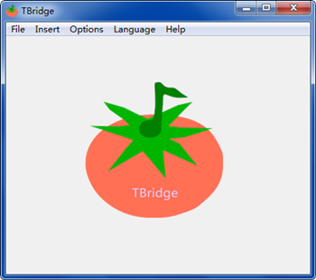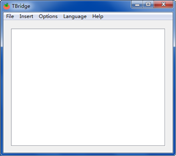
1.2 Program interface
After the program is started, the interface is as shown in the screenshot on the right, the white area is the plug-in display area, and the upper menu bar is File, Insert, Option, Language, Help.
Chapter 2 Tutorial
2.1 Open the plug-in
There are two ways to open the plug-in. One is to open the plug-in through the File in the menu bar and find the plug-in you want to open, and the other is to open the TBridge VST Browser through the Insert in the menu bar.
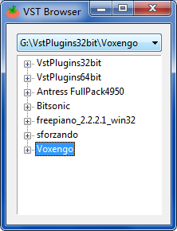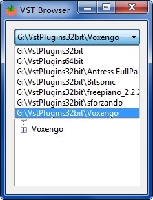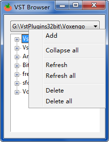
The VST Browser is shown in the picture above. The upper part of the browser window is a drop-down box for path operations, and the lower part is a tree-shaped list box for displaying VST information. When first opened, the content is empty. You need to right-click the drop-down box to pop up the detailed operation menu and add your own defined VST directory. Refresh means refresh the directory displayed in the drop-down box. It is generally used after adding a new VST plug-in.
After the directory is added, there are two ways to insert a new VST plug-in for TBridge through the VST Browser. They are double-click, right-click, and the effect of double-click is to load the selected plug-in to TBridge and close the VST Browser, The function of right-click is to load the selected plug-in into TBridge, but not close the VST Browser. This operation is mainly to add VST plug-ins in batches. TBridge allows up to 16 plug-ins to be added at the same time. The maximum number is because NetVST itself only provides 16 network interfaces Each plug-in requires a network interface.
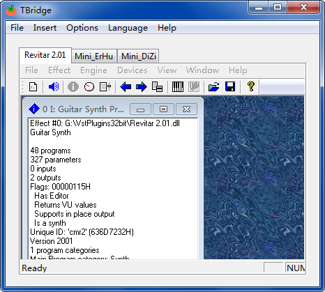
2.2 Function introduction
After the plugins are added, as shown in the figure, NetVST will be embedded into TBridge as a subform. Users can quickly view the plug-in information through the tab bar.

When you right-click the corresponding tab page, the menu item shown in the figure above will pop up, and the corresponding function is shown in the figure.
Connect: Connect with the receiver in DAW (or press the tab and drag to the receiver to connect)
Notepad: will be introduced later
Copy plug-in name, copy network information: Because the use of TBridge (NetVST) must be matched with the corresponding receiver in the DAW, but the name of the receiver cannot be changed, we need to rename the track or add a note in the DAW, o record the plug-in name and network information corresponding to the receiver to prevent confusion, this function is mainly for quickly and easily copying the plug-in name and information, and then pasting it into the DAW's note.
Rename plugin, rename network: If you need to open the same plugin multiple times at the same time and use its different presets, you can distinguish them by renaming.
Use of Notepad:You can enter some text in the note that needs to be temporarily recorded, such as when the plug-in is used, what you want to do with it, and which preset you choose among the various presets given by the plug-in.
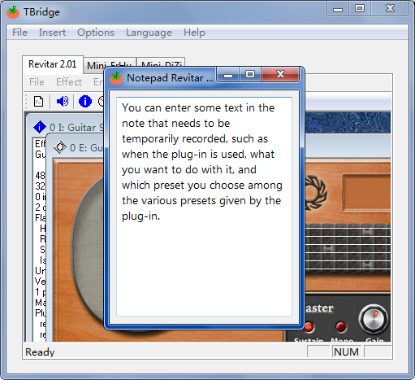
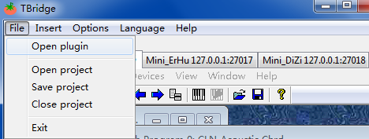 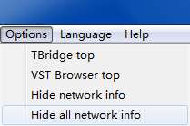
Hide network information, is used to choose whether to always display the plug-in's IP address in the tab bar.
Open and save the project. The user can save the currently opened plug-in information (such as note content, plug-in name, and network information) as a project file, which is used to load the already-opened project files in batches by opening the project option next time.
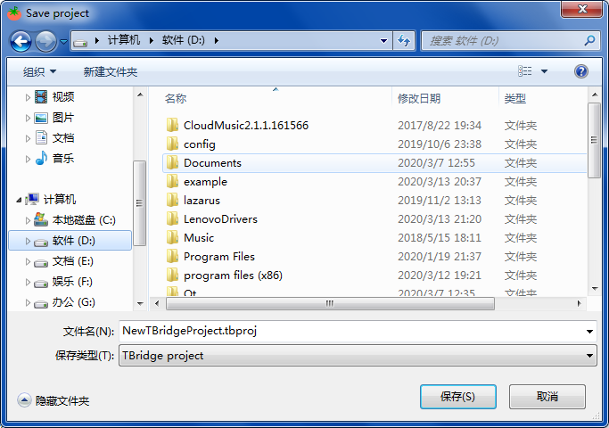
2.3 Connect with DAW
1. After the plug-in is loaded, open devices-Network and click OK directly in the pop-up window. This part is actually a NetVST operation, but TBridge provides the function of automatically assigning network interfaces, so that users only need to Click OK without having to manually assign an IP address.
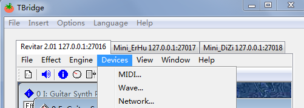
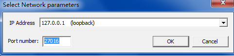
2. In DAW, insert the plug-ins provided by NetVST, there are two types, namely NetFilter.dll and NetSynth.dll, the first one is used to transfer effect information, and the second one is used to transfer instrument information. Load the plugin in the audio track and open the plugin at the same time. As shown below.
(Tips: 音轨 means track，输入 means input )
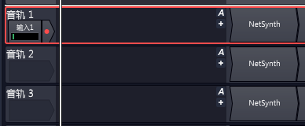

As shown in the figure, after this interface appears, open TBridge, right-click the plug-in that needs to be linked, and click Connect. The network information will be automatically filled and the connection will be started. Or you can use the left mouse button to press the plug-in you want to use without relaxing, drag the mouse to the screenshot window above, and the information can be automatically filled and start the connection，and you can hear the effect of the plug-in. DAW.
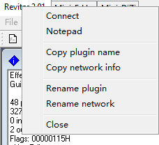
At the same time, in order to easily identify the plug-in in the DAW, you can also Copy plugin name, and then rename your DAW track name, or record it through the note plug-in in the DAW.

Note: The plug-in loaded by the Open project option, a network connection is still required. In tracktion (not tested on other DAW), NetSynth and NetFilter will remember their last network connection, although due to NetVST bugs, when you open it, the server will always display 127.0.0.1:27016, but you check Enable Network Communication and the server will automatically display the IP information it remembers.。
2.4 Precautions
1. If you have connected TBridge (NetVST) to DAW, then before you close TBridge or DAW, please make sure to uncheck the Enable Network Communication of each plug-in. If you do not uncheck it, it may cause the DAW to crash. Please note that there is a known bug in NetVST itself, after you check Enable Network Communication, each time you reopen the NetSynth or NetFilter window, this option will be unchecked, but it is indeed connected. If you want to disconnect, you need to check Enable Network Communication again, and then uncheck it.
2. If the DAW crashes or TBridge becomes unresponsive or crashes during the use of TBridge, it is generally caused by the error of the connection status of NetVST. In this case, NetVSTHost may remain in the process list. exe programs, they will still occupy the corresponding interface. Please end all of these NetVSTHost.exe through the process management in Task Manager, otherwise TBridge will not be used normally.
3. Please do not try to connect multiple NetSynth or NetFilter to the same network interface, which will cause the DAW to become unresponsive or even crash.